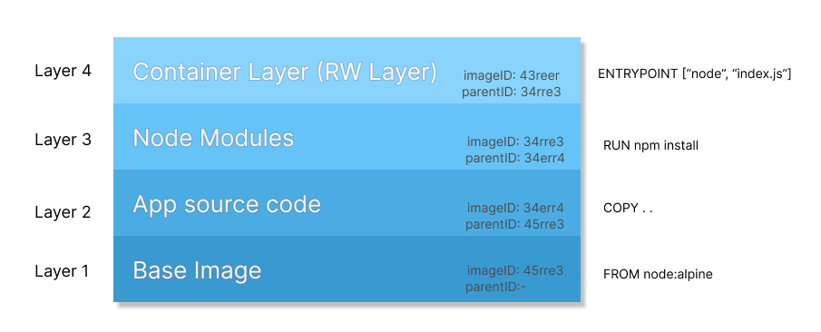

Deep dive into Docker Image Layers
In my previous post Getting started with docker, I explained the basics of docker. In this post, we will be deep diving into docker image layers. We will be covering the following topics in this post,
- What are docker image layers?
- Why does knowing docker image layers matter?
- Where do these intermediary images reside and how to see them?
- What are the constituents of a docker container size?
Are you ready? Yes! So let’s start…
What are docker image layers?
When we build a docker image using Dockerfile, you must have seen the logs on the terminal console. There you must have seen some sha IDs that it shows. Those sha IDs are nothing but intermediary image layers IDs.
⟩ docker build -f Dockerfile.new -t bitphile/test-image . (base)
Sending build context to Docker daemon 7.168kB
Step 1/4 : FROM alpine
---> da7260331371
Step 2/4 : COPY app.sh ./app.sh
---> 198fdf85c15b
Step 3/4 : RUN chmod +x app.sh
---> Running in cf5c357a3254
Removing intermediate container cf5c357a3254
---> 8e758ee45de3
Step 4/4 : ENTRYPOINT ["./app.sh"]
---> Running in 857700b4b452
Removing intermediate container 857700b4b452
---> 4d85107b2c59
Successfully built 4d85107b2c59
Successfully tagged bitphile/test-image:latestA docker image is made up of several docker image layers. Each of the commands in Dockerfile stacks up a new image layer on top of the previous one.
Note: Commands in
Dockerfileare those instructions which do some changes in the file system. Any change made in the file system creates a new image layer. So, commands are responsible for the creation of a new image layer. For example,COPY,RUN, etc are commands.
The following image shows the docker image layers having ID and their corresponding parent layer ID.

Note: Each of the layers coming on top of the existing one depends on their parent layer. Changing the sequence may altogether change the final image. Caching of image layers also depends upon this (upcoming sections).
R/W image layers
An image layer can be read-only or read and write. All the intermediate image layers are read-only. One can’t create a file in any of those layers. If anyone of you has worked on docker must be thinking, bitPhile is saying wrong as we can create files in running docker container.
Your concern is right. We can create files in the docker container. The reason behind this is Container Layer which is explained in the next section.
Container Layer
When an image is turned into a container, a new thin layer is stacked on top of the layers. This thin layer is called container layer. This image layer has both Read and Write access. All other image layers beneath this can only be read.
 Source: https://docs.docker.com/storage/storagedriver/images/container-layers.jpg
Source: https://docs.docker.com/storage/storagedriver/images/container-layers.jpg
{kind=link}
Why does knowing Image Layers matter?
There are several reasons why one should know about docker image layers. A few of them are described below.
Image Size
An image is a pack of all dependencies, libraries, and src code required for an application. These images are stored on cloud registries and shared across devices. Size becomes a foremost requirement for an image.
Image layers size consititute into the size of the final image. Identifying which layer is adding more size can help the developer to find areas of concern.
Layers are Cached
Image layers are stored on the host machine for future builds. This helps build docker images faster.
Let’s see an example. Consider two Dockerfiles, Dockerfile.new-1 and Dockerfile.new-2.
Dockerfile.new-1
# syntax=docker/dockerfile:1
FROM bitphile/my-base-image
COPY app.sh ./app.sh
RUN chmod +x app.sh
ENTRYPOINT ["./app.sh"]Dockerfile.new-2
# syntax=docker/dockerfile:1
FROM bitphile/my-base-image
COPY app.sh ./app.shBuilding the first image, the consoles show,
Sending build context to Docker daemon 7.168kB
Step 1/4 : FROM bitphile/my-base-image
---> da7260331379
Step 2/4 : COPY app.sh ./app.sh
---> 198fdf85c15b
Step 3/4 : RUN chmod +x app.sh
---> Running in cf5c357a3254
Removing intermediate container cf5c357a3254
---> 8e758ee45de3
Step 4/4 : ENTRYPOINT ["./app.sh"]
---> Running in 857700b4b452
Removing intermediate container 857700b4b452
---> 4d85107b2c59
Successfully built 4d85107b2c59
Successfully tagged bitphile/my-new-image:latestThe second, it shows,
Sending build context to Docker daemon 8.192kB
Step 1/2 : FROM bitphile/my-base-image
---> da7260331379
Step 2/2 : COPY app.sh ./app.sh
---> Using cache
---> 198fdf85c15b
Successfully built 198fdf85c15b
Successfully tagged bitphile/my-new-image-2:latestWe can see it uses caches for the second build. This increases the speed of building the image. Interesting, right?
Note: If any instruction changes, caches are not used for the next instructions. New image layers are created for them from the scratch. Why does this happen? Think about it!
Seeing Image Layers
Once the final image is built, we can see intermediary image layers by,
docker history <image-name>So, by running the above commands,
docker history bitphile/my-new-imageGives the output,
IMAGE CREATED CREATED BY SIZE COMMENT
4d85107b2c59 50 minutes ago /bin/sh -c #(nop) ENTRYPOINT ["./app.sh"] 0B
8e758ee45de3 50 minutes ago /bin/sh -c chmod +x app.sh 33B
198fdf85c15b 50 minutes ago /bin/sh -c #(nop) COPY file:1179990b720068e4… 33B
da7260331379 2 hours ago /bin/sh -c apk add --no-cache bash 2.24MB
b2aa39c304c2 3 weeks ago /bin/sh -c #(nop) CMD ["/bin/sh"] 0B
<missing> 3 weeks ago /bin/sh -c #(nop) ADD file:40887ab7c06977737… 7.05MB
This shows the intermediate image ID, Dockerfile instruction, and size.
Note:
<missing>indicates that a particular image is built on a different machine or usingbuiltKitdocker builder.
Image Layers on Machine
We can find these image layers on the host machine at location /var/lib/docker. If you are using a virtual machine to run a docker daemon, ssh into that machine and access this location.
Listing the contents of /var/lib/docker gives,
drwx--x--x 4 root root 4.0K Feb 26 09:14 buildkit
drwx--x--x 3 root root 4.0K Feb 26 09:14 containerd
drwx--x--- 20 root root 4.0K Mar 5 05:51 containers
drwx------ 3 root root 4.0K Dec 16 2021 image
drwxr-x--- 3 root root 4.0K Feb 26 09:14 network
drwx--x--- 173 root root 24K Mar 5 05:51 overlay2
drwx------ 4 root root 4.0K Feb 26 09:14 plugins
drwx------ 2 root root 4.0K Mar 5 02:42 runtimes
drwx------ 2 root root 4.0K Feb 26 09:14 swarm
drwx------ 2 root root 4.0K Mar 5 06:21 tmp
drwx------ 2 root root 4.0K Feb 26 09:14 trust
drwx-----x 6 root root 4.0K Mar 5 02:42 volumesWe can find these images in images/<storage-driver-name>/imagedb/content/sha25. In my case, overlay2 is storage driver. Refer my post Storage Driver.
Listing content of images/overlay2/imagedb/content/sha25, we see,
-rw------- 1 root root 1.9K Mar 5 05:10 08bd868662db2cd09a4c7b8e74dad6a9c8fe186964ff31c65d335299d1324ff3
-rw------- 1 root root 1.9K Mar 5 05:51 198fdf85c15b292a5fff554f3afc26fd1824413822ddd75e72f08937889f1770
-rw------- 1 root root 2.2K Mar 5 05:11 1d17f325c607e937d89b19de66287aad351fc1abb80bc36591d34b7457ff8316
-rw------- 1 root root 1.7K Dec 16 2021 25f8c7f3da61c2a810effe5fa779cf80ca171afb0adf94c7cb51eb9a8546629d
-rw------- 1 root root 16K Mar 1 12:49 2bc7edbc3cf2fce630a95d0586c48cd248e5df37df5b1244728a5c8c91becfe0
-rw------- 1 root root 2.4K Feb 26 09:51 2f6974482449313e863b0b709841b50da40ce7ef32017f0279671e9b2ee47289
-rw------- 1 root root 11K Mar 1 06:10 31d22a1554dfca7ad9377b67974ae2e0e3282247fc40fbf2ac3c380102ae772f
-rw------- 1 root root 4.4K Mar 1 05:26 3c3a210148bab6bc3faedba72ad7de5e58a7cdb6bba0847965211f47fe1c4c21
-rw------- 1 root root 2.1K Feb 26 09:35 da7260331379a532a15cf3e9bff522627b1574a9ce21bb06c92cea74992613faAs you can see da7260331379 is used as a cache to build the image.
Docker Container Size
There are two things, size and virtual size.
sizeis the size ofcontainer layer. It comprises of all the files that are writtencontainer layer.
virtual sizeis the sum ofsizeand data of read-only intermediate image layers. If two containers have the same read-only intermediate image layers, will share the same data with separatecontainer layerdata.
For example,
CONTAINER ID IMAGE COMMAND CREATED STATUS PORTS NAMES SIZE
7937d5f33e6e bitphile/my-new-image-2 "./app.sh" 5 seconds ago Up 5 seconds bitphile-test-container 0B (virtual 9.29MB)shows container bitphile-test-container has 0B size and 9.29MB virtual size. If you see the size of the whole image itself is 9.29MB which means it is all size of read-only image layer data.
Now, adding a new file into the running container should increase the size.
docker exec 7937d5f33e6e sh -c "echo hello world > file.txt"Now if we see the same container,
CONTAINER ID IMAGE COMMAND CREATED STATUS PORTS NAMES SIZE
7937d5f33e6e bitphile/my-new-image-2 "./app.sh" 39 seconds ago Up 39 seconds bitphile-test-container 11B (virtual 9.29MB)got 11B of size.
So, this is it for now. It’s great that you come reading till here. I will see you in my next post on docker. Till then,